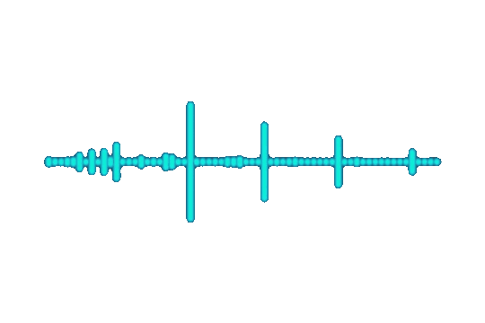

O melhor bot tudo-em-um para Discord
DISC8 é um bot do Discord completo, fácil de usar, que milhões de servidores em todo o mundo confiam para gerenciar e crescer suas comunidades.
Adicionar ao Discord Ver RecursosToque música de alta qualidade em seu servidor do Discord gratuitamente
DISC8 arrasa com as faixas, listas de reprodução e transmissões ao vivo.
